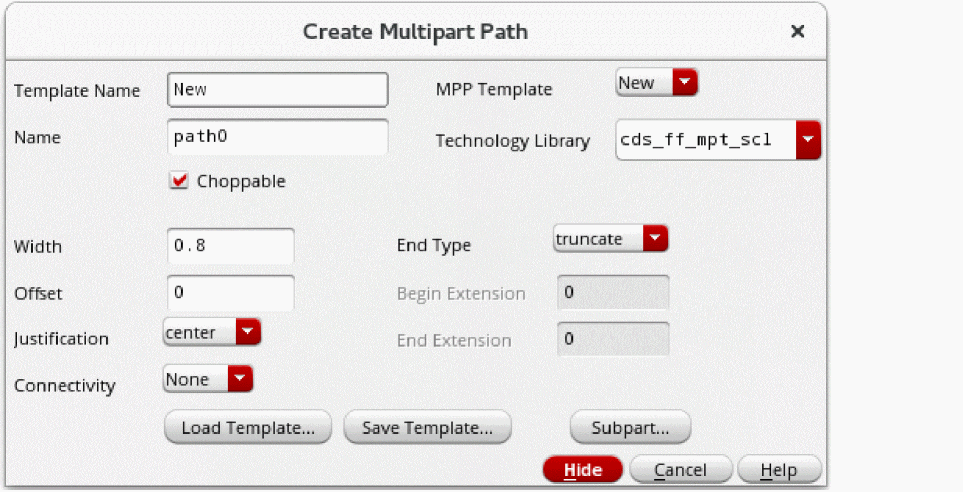

Defining the Master Path of an MPP
You can use a template to create a multipart path (MPP) or create a new MPP from scratch. The templates already defined in your technology library are listed in the MPP Template field of the Create Multipart Path form. You can also load MPP templates from ASCII files to add them to the templates listed in the MPP Template field and to the temporary technology file in the virtual memory.
Templates do not contain net names because each MPP you create from the same template could be on a different net. When you choose a template that contains pin connectivity, the system prompts you to enter a valid net name. You must enter a name in the Net Name field for each part (master path and/or subparts) that has pin connectivity. If you click in the cellview window before entering the required net names, the system beeps.
To define the master path of an MPP:
- In the layout window, choose Create – Multipart Path.
-
Press
F3.
The Create Multipart Path form opens.
The first time you open form, the values of fields default to the values set in the technology file and can vary depending on which layer is current in the Layers panel. If there is no rule defined in the technology file, the system uses a system default. When you select Create – Multipart Path, you might see warning messages about no minimum width rule defined for the first valid layer listed in the Layers assistant. -
To create a new MPP in the current layout window or to use an existing template, do one of the following.
-
To create a new MPP from scratch, without using an existing template:
-
When you do not want to save your MPP as a template, from the MPP Template field, select New.
Choosing New resets all values in the Create Multipart Path and ROD Subpart forms to system defaults and sets the Template Name field to New. -
When you want to save your MPP as a template, for Template Name, type a unique name, such as
myMPP. -
Check the Layers panel for the current layer and purpose for the master path and modify it, if desired.
When you create a new MPP without using a template, you need to set the layer and purpose in the Layers panel of the Palette assistant to the value you want for the master path.
-
When you do not want to save your MPP as a template, from the MPP Template field, select New.
-
To use an existing MPP template:
-
Select the name of the template you want from the MPP Template field.
When you choose an existing MPP template, the system changes the current layer and purpose in the Layers panel to the layer and purpose defined in the MPP template for the master path.
If the layer specified in the template is not a valid layer, the system displays a dialog box prompting if you want the system to add the master path layer to the Layers panel. If you do not, the system uses the current layer in the Layers panel. -
If a dialog box prompts whether you want to add the template layer to the list of valid layers, click OK or Cancel, as required.
If you want a different layer, you can change the layer in the Layers panel. - Check the Layers panel for the current layer and purpose for the master path, and modify it if desired.
-
Select the name of the template you want from the MPP Template field.
Now you can modify the values in the Create Multipart Path form. -
To create a new MPP from scratch, without using an existing template:
-
For Name, accept the default system-assigned name or type in a name that is unique in the current cellview.
The Name field specifies a unique name for the ROD object information about the MPP in the layout window. You can access information about the MPP through multiple levels of hierarchy using this name. The default ROD object name consists of the prefixpathfollowed by a number. - For Technology Library, select the library in which you want to save the MPP. The list displays all the technology libraries in the effective technology libraries, which are defined in the technologies database, that contain only the multipart path templates defined in the database. When a different technology library is selected in the Technology Library field, the MPP Template field is updated to list the templates contained in that library.
- Select the Choppable check box if you want to make the master path and all subparts choppable. To make the master path non- choppable (subparts can be choppable or not), turn off Choppable.
-
For Width, do one of the following:
- Type a positive integer or floating-point number.
-
To use the
minWidthrule for the master path layer from the technology file, do not change the Width field. -
If the
minWidthrule is not defined in the technology file, and:- This is the first time you have used this form in your current editing session and you do not specify a width, the system supplies a default and displays a warning saying that the default width is being used.
- You have used this form earlier in your current editing session, the previous value for this field is displayed and the system displays a warning.
-
For End Type, choose a value. If you want to specify a beginning or ending extension, you must choose variable.
The Offset and Justification fields are interdependent. Justification determines the part of the master path (master path centerline, left edge, or right edge) that is offset from the points you enter (the point list), relative to the direction of the master path. The direction of the master path is determined by the sequence in which you enter its points. - For Justification, select one of the following values:
-
For Offset, do one of the following:
-
To make the centerline of the master path coincident with the points you enter, leave Offset set to
0and Justification set to center. -
To offset the master path from the point list, type a signed integer or floating-point number.
The part of the master path that is offset from the point list is determined by the value of the Justification field. Whether you enter a positive or negative number depends on where you want the master path in relation to the point list. The following table lists various combinations of Offset with respect to the position of the master path.Direction of Point List Segment Positive Offset Negative Offset
-
To make the centerline of the master path coincident with the points you enter, leave Offset set to
-
For Begin Extension, do one of the following:
-
If you want the master path layer to begin at the first point you enter for the master path, leave Begin Extension set to
0. -
If you want the master path layer to extend beyond the first point you enter for the master path, type a positive integer or floating-point number.
You can specify an extension only if the End Type field is set to variable.
-
If you want the master path layer to begin at the first point you enter for the master path, leave Begin Extension set to
- For End Extension, do one of the following:
-
For Connectivity, do one of the following:
- If you do not want to define connectivity, leave Connectivity set to None and you can define the subparts as described in Editing a Subpart of an MPP.
- If you want to associate the master path with a net or specify it as a pin, see Defining Connectivity for the Master Path.
Related Topics
Flow for Creating Multipart Paths
Return to top